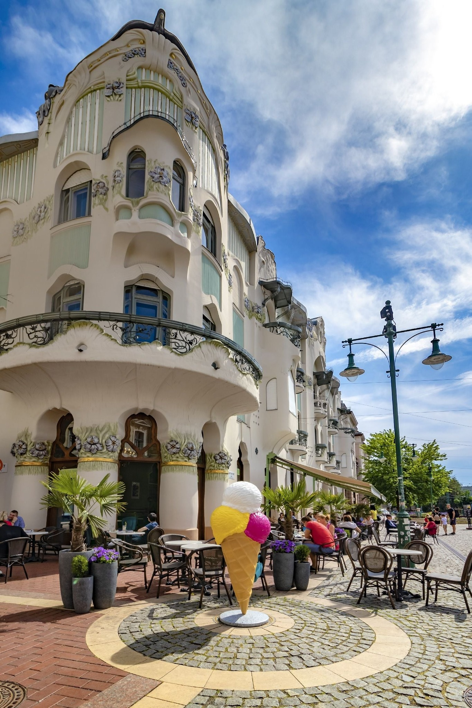

Fedezd fel a francia, kézműves cukrászművészet legjavát Magyar Ede gyönyörű szecessziós palotájában, a New York-i Gold Key Awards of Excellence nemzetközi nagydíjas Varró Zoltán enteriőrjében! Süteményeink, desszertjeink egytől egyig a saját műhelyünkben készülnek, csúcsminőségű alapanyagokból, óriási odafigyeléssel. Legyen szó üzleti megbeszélésről, randevúról, családi sütizésről,
Szeged első kézműves cukrászdája
örök élményt nyújt!